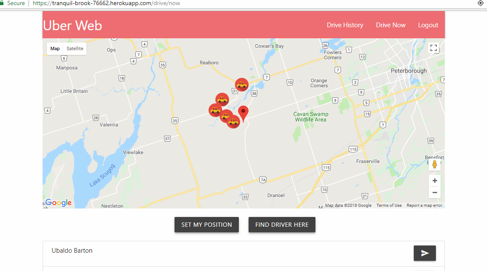
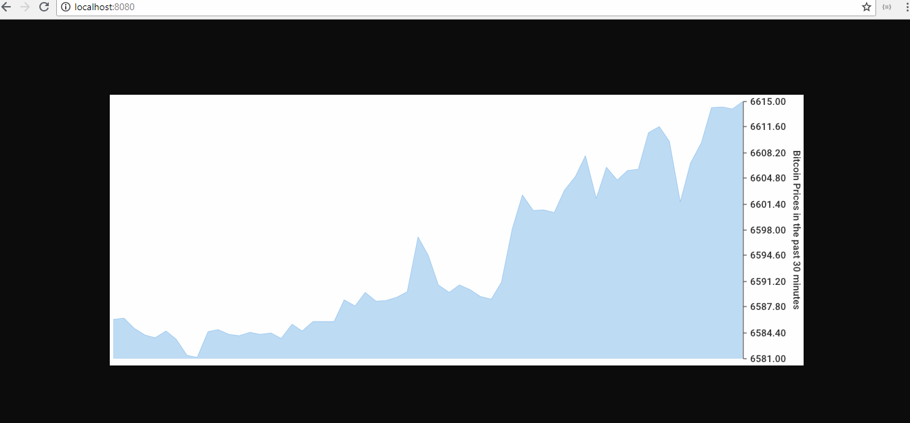
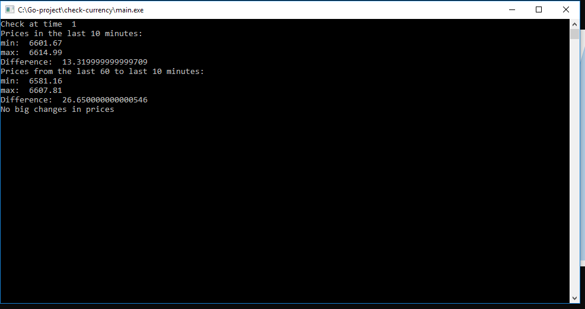

Uber Web, a simple Full Stack App

In this app, the user will login by Google. After logging in, the user can find list of drivers near him. If the App not found any drivers near him, it will generate random drivers near that user, save to the database, and then find again with query like this.
Driver.find({
'geometry.coordinates': {
$nearSphere: {
$geometry: {
type: 'Point',
coordinates: [lon, lat]
},
$maxDistance: 8000
}
}
})
Then, the user can ride with that driver, after riding, the trip will be saved into the database, and user can also write review about that trip too, and he can see the list of his trip in the Drive History page.
Version 1: Use React + Redux for front end
Link: https://secret-coast-61207.herokuapp.com/
Github: https://github.com/springpage/Fullstack-uberweb-redux
Version 2: Use React + GraphQL + Apollo for front end and Apollo Express for Back end.
Link: https://tranquil-brook-76662.herokuapp.com/
Github: https://github.com/springpage/Fullstack-uberweb-graphql
GraphiQL tool is available too: https://tranquil-brook-76662.herokuapp.com/graphiql
In both 2 version, at backend I used Nodejs + ExpressJS + MongoDB
A simple Go program
Code: https://github.com/springpage/Go-coinchecker
This program retrieve Bitcoin price from an API, and get the last 60 minute's price, every minute.
Then it draw a chart that user can view chart at localhost:8080.

Also, the program analyze the data and check if the prices has big changes in the last 10 minutes. Then it output the analyze result to the console.Every 5 minutes, the program gets data from API again, analyze and write result to the screen.

A simple react app
This app work with Unsplash Api and load beautiful pictures.
Some react native apps
Gmail UI Clone in React Native
Clone using Native Base Library

Youtube Favourites
- This is a simple app that fetch videos from youtube using youtube api, after user search. Then it list the videos and user can click and play it.
- User can also click like video, then the liked video will be save into the device storage. All the liked videos will be listed and displayed at the Liked Video Screen.
- If User not like video anymore, he can click unlike and the video will be remove from both screen and device storage.
This app use Asyncstorage, react, redux, redux-thunk + react navigation
Note and Auth
- This app implement types of Authentication like Login via facebook, via phone, via email and password.
- After login, user can make some note and save that note to firebase database.
- Next time user login, user will get the note and can change it and save it again.
- For facebook login, I implement facebook authentication feature from expo.
- Phone verification: I make 3 small functions and uploaded to google cloud functions. The functions connect with firebase and twilio API.
- The functions then help user to make account in firebase, generate 4-digit random code, tell twilio to send code to user's phone. And compare the code it generate with the code user submit. If the code is true, user will be generated a token to access to firebase and make note.
- This app use Axios, react navigation, native base.
Note: Some API maybe outdated so you may need to change the API to make it works.